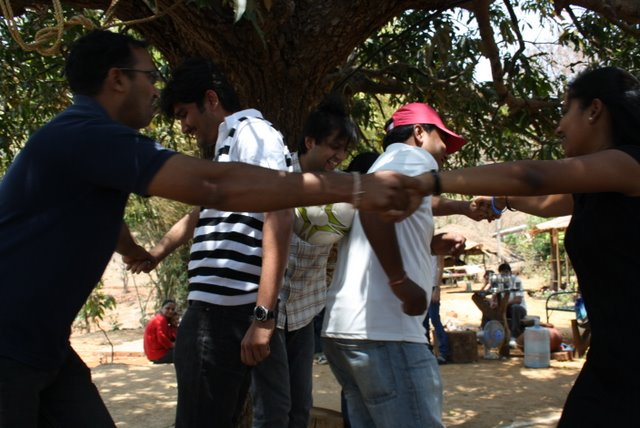
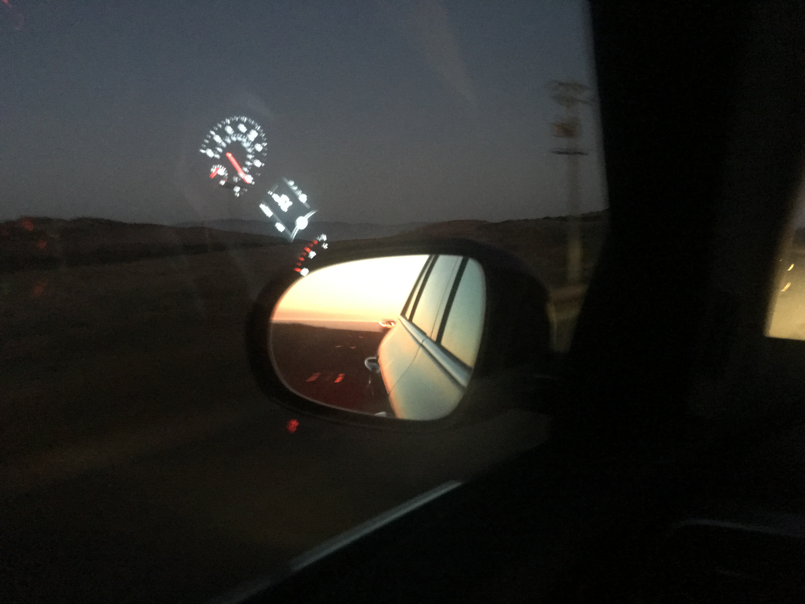
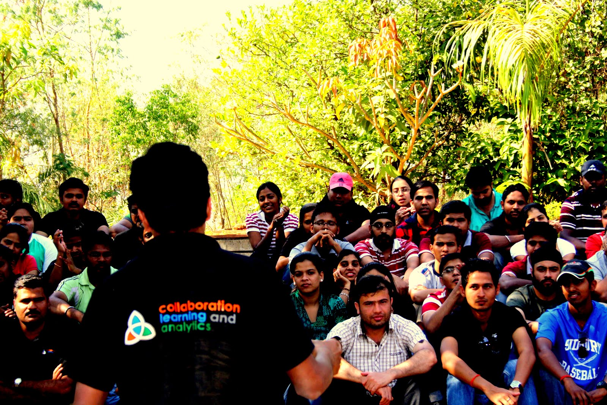

I didn't set out with a fixed plan. What I had was curiosity, a strong work ethic, and the good fortune of being around people who gave me room to grow.
From early days solving technical problems in server rooms to leading global teams across continents, my path has been shaped more by questions than answers.
Over time, I've worked with enterprises navigating digital transformation, with startups turning ideas into reality, and with teams trying to find clarity amid complexity. Each phase has been different. What's remained constant is a deep respect for people, process, and purpose.
I don't see this as a résumé. It's a reminder that careers, like people, are shaped more by learning than by titles.



Every organization is a collection of people with goals, fears, and potential. Leading well starts with seeing that clearly.
The right processes don't slow things down. They create the conditions for speed, quality, and trust to coexist.
When things are uncertain, purpose is what keeps a team moving in the right direction without needing constant direction.
Careers, like people, are shaped more by learning than by titles.
Sometimes in my work, sometimes in conversations, and often in quiet moments between the two.
Read my blogs